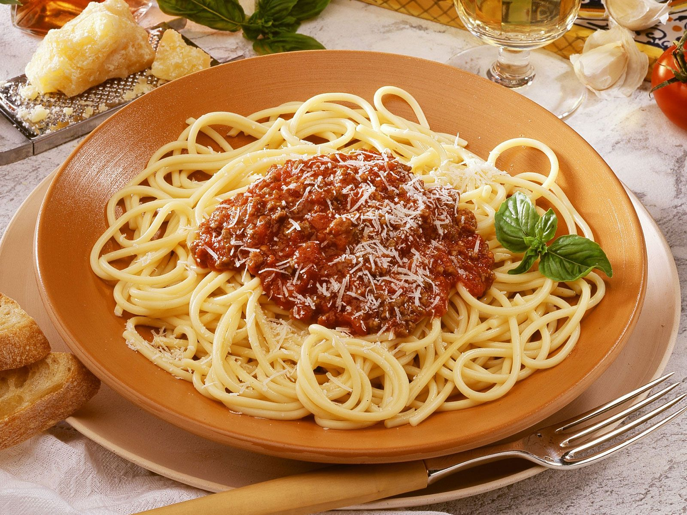

Recept voor Pasta Pesto
De saus wordt klaargemaakt met olijfolie of boter of allebei. In 1982 werd
het authentieke recept door de Accademia Italiana della Cucina (de
Italiaanse Culinaire Academie) bij de Bolognese Kamer van Koophandel
gedeponeerd.[1] Van oudsher wordt deze saus geserveerd bij verse
tagliatelle of cannelloni. Ook wordt de saus gebruikt in andere gerechten,
zoals (samen met bechamelsaus) in lasagne.

Ingredienten
- gehakt varken + rund beenhouwerij
- selder
- wortel
- bladpeterselie
- verse rozemarijn
- uien
- knoflook
- Parmezaanse kaas (blok)
- spaghetti
- gepelde tomaten in blokjes (in blik)
- rode wijn
- olijfolie
- laurier
- zwarte peper
- zout
Recept
-
Snij de geschilde wortel en de selder in kleine blokjes van 1/2 cm.
- Snipper de uien en het knoflook fijn.
-
Verhit de olijfolie in een grote kookpot en stoof de fijngesnipperde
uien en het knoflook glazig. Voeg de blokjes wortel en selder toe en
roerbak een paar min.
- Doe er het gehakt bij en maak los met een vork. Bak 10 min. gaar.
-
Voeg de gepelde tomaten, de wijn, de rozemarijntakjes en het
laurierblaadje toe. Dek af en laat minstens 1 u. sudderen op een zacht
vuur. Kruid met peper.
-
Rasp ondertussen de parmezaan fijn en hak de blaadjes van de platte
peterselie fijn.
-
Kook op het einde van de gaartijd van de saus de pasta beetgaar in
lichtgezouten water (kooktijd: zie verpakking). Giet af.
-
Meng de pasta onder de saus, verdeel over de borden en werk af met wat
fijngehakte peterselie en geraspte parmezaan.